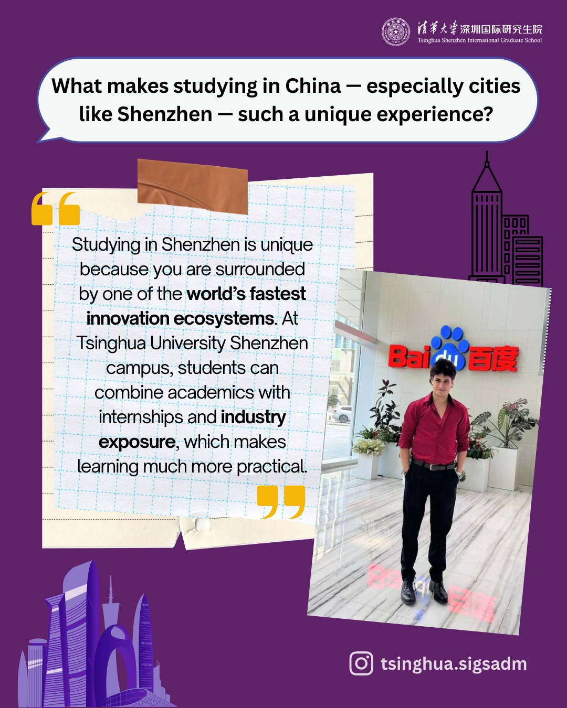
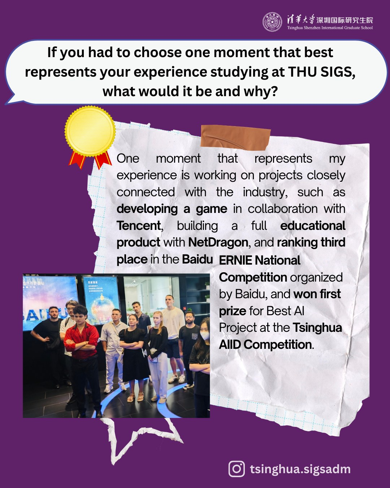
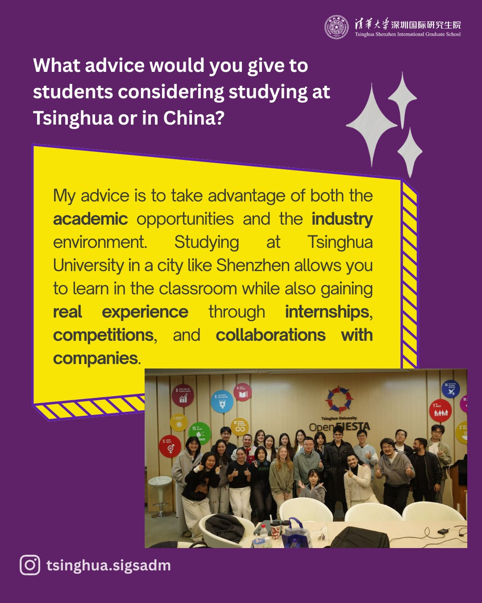
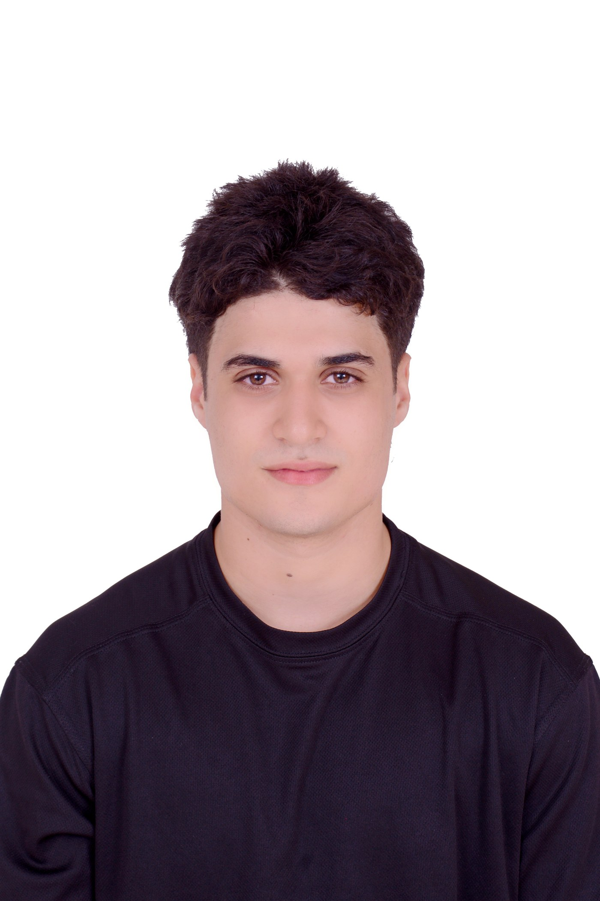
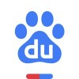
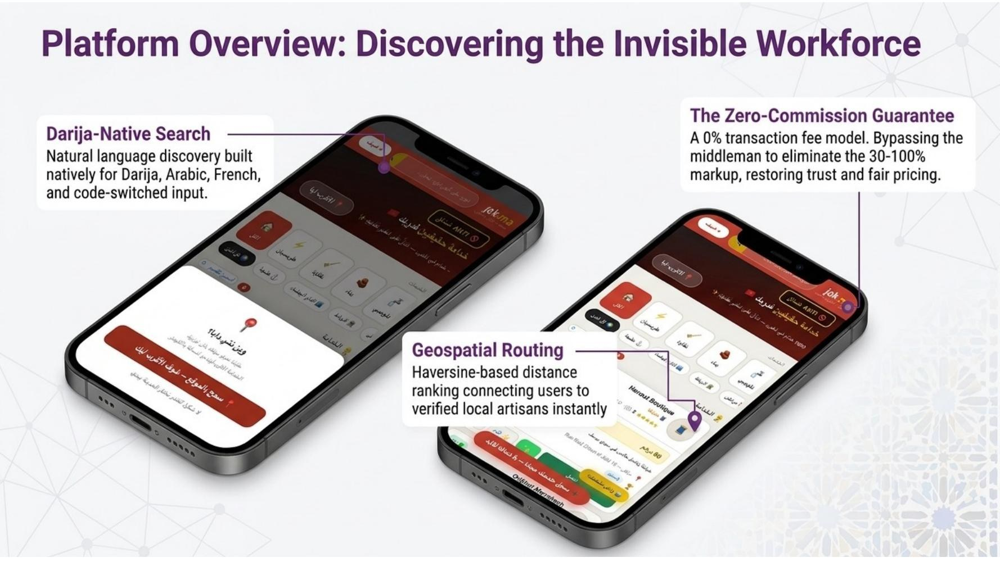

Q · 谁报道过我?
Who has officially featured me?
Tsinghua SIGS itself. Full post on @tsinghua.sigsadm — Baidu ERNIE work, AIID win, advice. official



MSc AI + Innovation Design (AI+X Elite) at Tsinghua SIGS · B.Eng. Computer Science from NPU · ex-Baidu ERNIE evaluator (文心导师) · AIID Yearly Competition winner · founder of jak.ma.

Two of China's biggest names. Tsinghua and Baidu — paired, not just one.

Fortune-China AI + Education leader · AIID partner. SSO was built for their stack. AIID Visiting Study (Fuzhou, Dec 2025) opens the introduction.
Tsinghua SIGS itself. Full post on @tsinghua.sigsadm — Baidu ERNIE work, AIID win, advice. official



Six shipped AI artifacts. One live marketplace · one Tsinghua AIID winner · one Baidu 3rd-prize device · one Tsinghua Best-Design winner · one 74-page algorithm thesis · one 🤗 Hugging Face Space (live demo).

Zero-commission, anti-shnaq, Darija-first. 1,862 workers · 15 cities · 3,400 daily queries · 1,100 DAU. Two-pass grounded recommendation (p50 1.18s, p99 2.82s · $0.0008/query), categorical Mongo retrieval (not vector RAG), Grok-3-mini in production with deterministic verifier (0.7% rejection rate). Beats sabab.ma (the French-first incumbent) on worker count (4× more), language coverage, and zero-commission model.
K-12 AI-native OS · 3 portals · 64 views · gemini-2.5-pro + imagen-4 + veo-3.1. localStorage-only — FERPA-by-design. Solo build.
ERNIE-4.5 children's AI hardware · voice-first · parental-controlled. Top 3 of 23 finalists · 900+ submissions. Featured by PaddlePaddle. 4-metric LLM-as-Judge blind A/B: SFT won 87.5% / 72.5% on Interactivity / Safety vs ERNIE-4.5-Tiny base.
Novel algorithm that classifies environmental changes before responding. Rank 1.25 vs 5 SOTA. Maps onto LLM serving, RLHF.
Interactive Darija chat demo for jak.ma — production retrieval architecture in a public, browser-runnable space. Public, deployed, reproducible.
AI assistant for international students applying to study in China. 6-member Tsinghua course project. Won Best Design Award Dec 2025.
5-file rubric: pricing · eval · calibration · verifier · multimodal. The rubric layer behind every project here.
Three production essays. Case study, methodology, eval rubric — opinionated and load-bearing.
What it actually took to ship verifier-gated retrieval into a Moroccan marketplace. 5 decisions, 5 things that broke, the numbers a year in. p50 1.18s · p99 2.82s · $0.0008/query · 0.7% verifier rejection.
Pricing taxonomy · evaluation rubric (5-dim) · rater calibration to Krippendorff α ≥ 0.7 · verifier philosophy · multimodal decision matrix. Stress-tested on 3,400 daily prod queries + Baidu ERNIE program.
Public methodology from the Baidu ERNIE Mentor Program. 5-dim eval framework (factuality · reasoning · fluency · calibration · safety), adversarial-pair pattern, cross-language calibration, multi-turn drift checks. Feeds release-gating decisions.
74 pages. Rank #1 of 6 algorithms tested. A novel evolutionary algorithm that classifies the type of environmental change (objective / constraint / combined) before adapting — built for problems where targets and constraints both move over time. Maps onto LLM serving, RLHF, agent orchestration.
Underlying MATLAB code + the 74-page PDF stay private — email elakkadsami00@gmail.com for access.
Four AI roles in 18 months. The thread: one 5-dim evaluation methodology, invented at DOPEDCLUB, formalised at Baidu ERNIE.
Paid expert on Baidu's flagship LLM (文心一言). Stress-tested prompts · multi-dim scoring rubric · production-readiness signals · release decisions on candidate checkpoints. Built RedFOX on the side — 3rd Prize / top 3 of 23 finalists from 900+ submissions at the 2025 ERNIE Hackathon. Two official Baidu certificates.
ML predictive maintenance across 3 production lines. +12% accuracy, −18% downtime. 120K+ sensor records data pipeline. Digital twins cut test cycles 2 wks → 4 days. Authored Morocco-expansion feasibility study (~30% logistics savings).
Creative studio using GenAI for client deliverables. Designed the 5-criteria evaluation framework that became the signature rubric reused at Baidu ERNIE and as the jak.ma verifier. Longest-duration formal AI-PM role.
Object detection for autonomous-driving R&D (~98% precision). Segmentation pipelines (−45% preprocessing, −30% training time). Identity-verification eval supporting internal Alipay / WeChat Pay integration tests.
8 selected public repos. Three categories. Curated for signal — everything open-source except the live jak.ma engine.
PM frameworks for low-resource LLM products.
Production case study — verifier-gated retrieval.
5-dim evaluation rubric for two-pass grounded retrieval.
Baidu ERNIE methodology notes + RedFOX.
NPU undergrad → Tsinghua master's. CSC government scholar. Five languages.
Classify the failure mode first. Then pick the right tool — eval rubric or verifier-gated retrieval.
AI products fail in two ways: the model is wrong (caught by eval rubrics + calibration) or the model is right but the question was framed wrong (caught by verifier-gated retrieval).
My signature methodology — 5-dim evaluation rubric + verifier-gated retrieval — started at DOPEDCLUB (Casablanca), got formalised at Baidu ERNIE (Shenzhen), and now runs in production at jak.ma (Morocco).
The frontier work shaping how I think. What I'm reading, building toward, and arguing with.
Anthropic's CAI work and the broader RLHF stack — the multi-reward shaping problem in ADCMOplus's change-classification framing.
OpenAI / Anthropic tool-use, Manus, multi-agent orchestration — directly tied to jak.ma's two-pass architecture.
How major labs validate models. Extending the 5-dim rubric from Baidu ERNIE work toward benchmark-grade reproducibility.
Atlas Chat, Jais, Falcon, AceGPT — Maghreb dialect coverage and the gap between MSA and real spoken Arabic.
Qwen2.5 / Llama 3.1 / ERNIE-Tiny LoRA recipes. Roadmap: 3× cost reduction on jak.ma's Pass 2 generation.
The Chinese frontier-model landscape — release cadence, eval gaps, where each beats GPT/Claude on price-per-eval.
Anything that ships real AI products. I keep the door wide.
Roles I'm open to: AI Product Manager · Applied AI Engineer · AI Research Engineer · AI Strategy / Advisory · founding-team / 0→1 · technical PM at a research lab. Full-time, internship, or contract — all on the table.
Companies I'd love to work with: NetDragon · Tencent · Huawei · Baidu · Ping An · Rokid · ByteDance · Alibaba in China. G42 · Microsoft UAE · MBZUAI in the Gulf. Anthropic · Mistral · DeepMind · Microsoft Research · NVIDIA · Hugging Face globally. Strong pull toward Chinese big-tech, but truly open to anywhere the work is interesting.
Verticals I gravitate to: AI + Education, AI hardware, multi-agent retrieval, low-resource-market AI (Arabic / Darija / Mandarin / French), evaluation & calibration, marketplace / matching. Will gladly take the conversation if it's outside this list — every good problem teaches. Based in Shenzhen, open to relocation. Longer arc points to the UAE then Australia, but no fixed timetable.